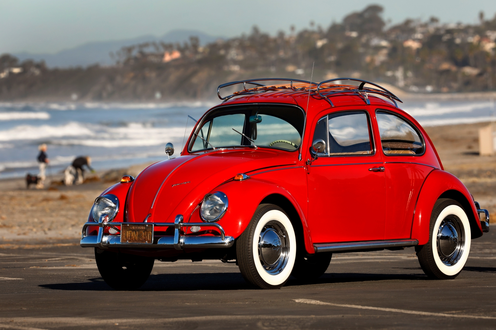

R$:25.000
O Volkswagen Fusca surgiu de uma encomenda de Adolf Hitler, que queria um carro popular para os alemães.
O projeto foi feito por Ferdinand Porsche, e a produção marcou a criação da Volkswagen.
A Segunda Guerra atrapalhou os planos e somente no final a década de 1940 que o modelo de fato engrenou.
CHEGADA DO FUSCA NO BRASIL
O Fusca começou a ser importado para o Brasil a partir de 1950.
O primeiro Fusca fabricado no Brasil com peças nacionais saiu em 1959.
A Volkswagen decidiu estabelecer uma fábrica no Brasil para produzir um carro acessível e resistente.
O Fusca foi o carro mais vendido no Brasil durante 24 anos.
A produção do Fusca foi interrompida nos anos 80, mas voltou a ser feita por um breve período entre 1993 e 1996.
CARACTERISTICAS
Design clássico e inconfundível
Simplicidade mecânica, facilitando a manutenção
Econômico, tanto no consumo de combustível quanto no custo de manutenção
Versátil, podendo ser usado como carro de passeio ou para fins comerciais
Resistente e durável, suportando longas jornadas e cargas pesadas